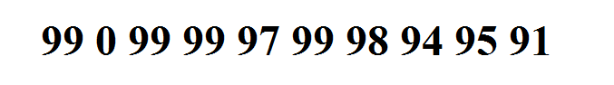
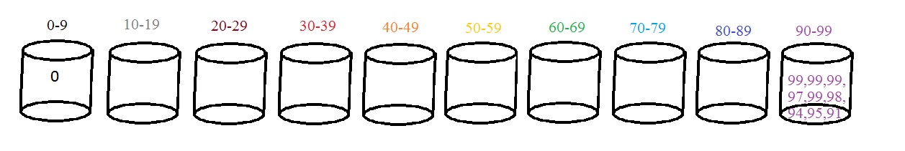

Do wykonania sortowania kubełkowego potrzebne nam będą:
-rozmiar sortowanego zbioru
-przedział znajdujących się w nim liczb
1.Odnajdujemy w zbiorze najmniejszą i największą liczbę żeby ustalić przedział.
2.Posiadany przedział dzielimy na tyle równych części ile posiadamy liczb do sortowania.
3.Posiadane dane porównujemy z zakresem i przypisujemy do poszczególnych kubełków.
4.Puste kubełki usuwamy, pełne posiadające co najmniej 2 liczby sortujemy w dowolny sposób.
5.Scalamy w ten sposób otrzymane kubełki.
Przykład pesymistyczny:

Postępując analogicznie jak w poprzednim przypadku zostajemy z dwoma kubełkami w tym jednym i nadal nie posortowanym.
Kosztowało to nas sprawdzenie prawie n^2 kubełków. Poza tym musimy posortować jeszcze zawartość ostatniego kubełka,
możemy to wykonać analogicznie przeprowadzając w nim kolejne sortowanie kubełkowe.
